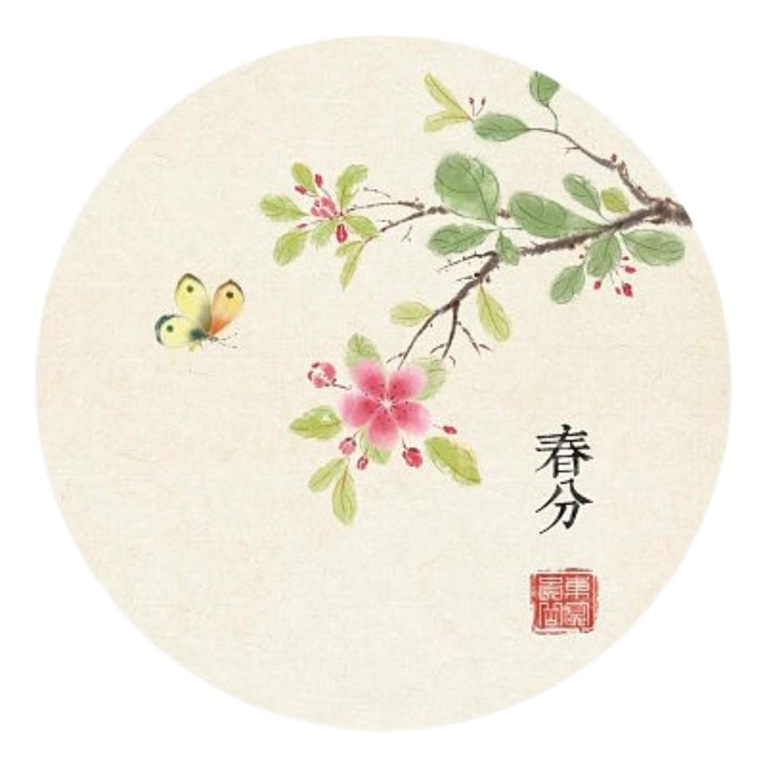
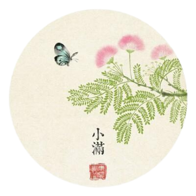
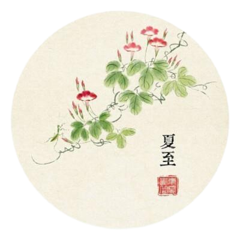
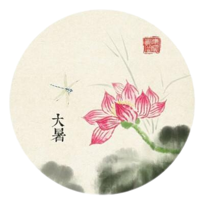
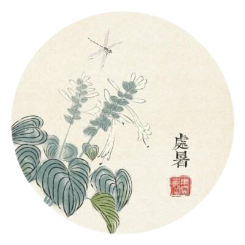
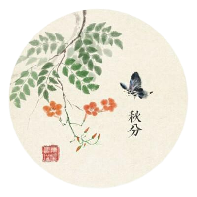
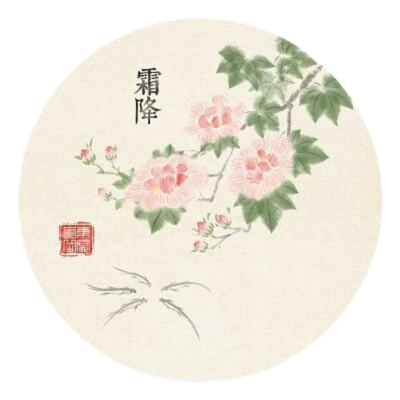
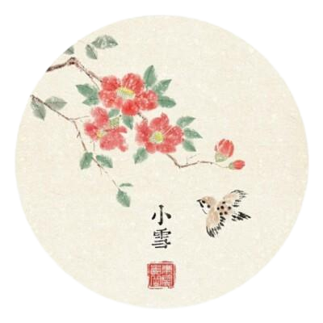
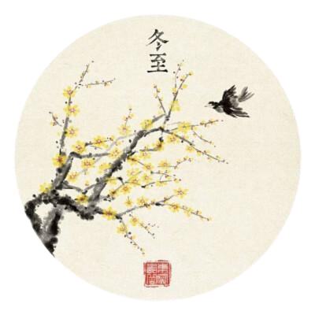
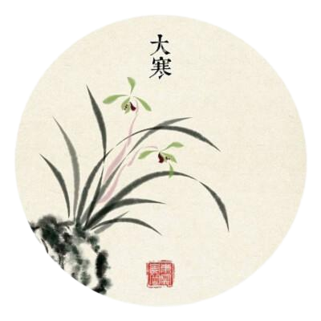

二十四节气原创诗词
立春感怀
晨曦送苦霜，万丛藏新芳。
夜薄无所闻，伫望星月茫。
故园辞故人，神渡汨罗江。
愿得共新岁，叶隙一抹阳。
夜薄无所闻，伫望星月茫。
故园辞故人，神渡汨罗江。
愿得共新岁，叶隙一抹阳。
昭君怨·雨水暖晴
鸢啼和风清味，初日早绿自醉。二月倚芳菲，庆余晖。
日跌煦暖小寐，梦觉光景零碎。夕颜何人催？霞亦瑰。
日跌煦暖小寐，梦觉光景零碎。夕颜何人催？霞亦瑰。
惊蛰令
蛰龙惊夜眠，一啸动千山。
璇凤鸣朝歌，一舞倾九川。
隐隐天雷号，花容卉木焕。
虫豸万里足，谁道行路难？
璇凤鸣朝歌，一舞倾九川。
隐隐天雷号，花容卉木焕。
虫豸万里足，谁道行路难？

熹雨春分·忆
薄雾幻海庄生梦，淫雨梨花洛神恸。
晨湖寂寥小山空，但见云鸟舞九重。
昨日北关举子忙，追忆流年路遥遥。
遥遥雁行百万里，何以阵寒竞折腰？
晨湖寂寥小山空，但见云鸟舞九重。
昨日北关举子忙，追忆流年路遥遥。
遥遥雁行百万里，何以阵寒竞折腰？
万里春·静宇清明
莺啼五里，簇芳天朗气。煦初阳，景映春桥，鲜衣隐醉息。
繁锦春难觅，恨连日，无余寻迹。便相惜，竟惹和风，暂得偷闲意。
逢谷雨忆往
东风十里雨盈空，斜阳三分暑气浓。
绿茵萦萦争暖色，烟树隐隐满星瞳。
去年今日故园中，再归书香春意融。
华夏星夜静光影，风雨终归万户灯。
绿茵萦萦争暖色，烟树隐隐满星瞳。
去年今日故园中，再归书香春意融。
华夏星夜静光影，风雨终归万户灯。
归途所见·立夏
铁龙啸千里，山水一丈遥。
略眺两岸景，芙蓉满窗笑。
骄阳销斜影，莺燕长歌望。
何处镜湖烁？繁荫一座桥。
略眺两岸景，芙蓉满窗笑。
骄阳销斜影，莺燕长歌望。
何处镜湖烁？繁荫一座桥。

青玉案·小满怀古
长灯夜雨辰星落。抚萧叶，听风飒，处处芳蕊侵巷陌。
案砧清响，玉珍绝味，喧阗影斑驳。
长安盛世匆匆过，夜月如旧马嵬卧，烽燧青枝疆场祸。 盛衰昔景，俱归瀚海，风住灯花烁。
长安盛世匆匆过，夜月如旧马嵬卧，烽燧青枝疆场祸。 盛衰昔景，俱归瀚海，风住灯花烁。
苏幕遮·芒种致举子
越关山，跨九江，夜阑更沉，破晓雷霆啸。三载英飒凌云志，雄关漫道，执枪破九霄。
身已至，心何惘？昔年渺岸，今朝咫尺遥。仗剑独行走云涯，来年今朝，可为笑谈道。
身已至，心何惘？昔年渺岸，今朝咫尺遥。仗剑独行走云涯，来年今朝，可为笑谈道。

夏至琐事
月落星沉行人稀，草盛木飒夜莺啼。
花气两袖袭灯影，清风一盏醉人心。
杂章万千偷闲意，独行长桥夜隐亭。
亭水再逝复明日，且将仲夏裹寒衾。
花气两袖袭灯影，清风一盏醉人心。
杂章万千偷闲意，独行长桥夜隐亭。
亭水再逝复明日，且将仲夏裹寒衾。
小暑日·东园景
惺忪步炎霭，暑光入我怀。
铃铃镜湖响，柔柔婉风来。
临窗书香客，潋滟水浸台。
环台星花遍，玲珑哪堪摘？
铃铃镜湖响，柔柔婉风来。
临窗书香客，潋滟水浸台。
环台星花遍，玲珑哪堪摘？


破阵子·大暑所思
微风筱夜侵案，繁花拂晓满川。寒窗十载偕过客，金榜一朝仍半山，整装再痛战。
清泠梦起江岚，暑气无妨鸣蝉。卷帙千篇行烟海，虚妄尽散苦为欢，灯影彻漪澜。
清泠梦起江岚，暑气无妨鸣蝉。卷帙千篇行烟海，虚妄尽散苦为欢，灯影彻漪澜。
立秋·楚汉怀古
阿房一炬骊山荡，巨鹿豪胜指咸阳。
明栈暗度秦原定，鸿门败宴显真王。
勇绝韬晦穷黩武，乡音四起垓下惶。
胄甲不见乌江水，隔岸虞兮楚声唱。
明栈暗度秦原定，鸿门败宴显真王。
勇绝韬晦穷黩武，乡音四起垓下惶。
胄甲不见乌江水，隔岸虞兮楚声唱。

处暑·城外城
北城晴方好，轩宇正相宜。
清风湖畔歌，梁燕窗外啼。
嚣外尘世土，宇内战火地。
遑遑偕入海，闲外得秋意。
清风湖畔歌，梁燕窗外啼。
嚣外尘世土，宇内战火地。
遑遑偕入海，闲外得秋意。
西江月·白露初凉
夜霖行云一盏，镜湖临月破散。小涧虫声一如故，庭前黄发一幕。
花气三番携暖，人烟几度惊寒。何处书香灯影残？水榭再锁江峦。
花气三番携暖，人烟几度惊寒。何处书香灯影残？水榭再锁江峦。

秋分·终章
清茶空盏尽心满，风尘两岸见沉檀。
行船夜雨纵一笑，诗情满载返庐山。
云海浮沉两清谈，所遇即安共贪欢。
放榜簪花弱冠里，风信送我渡津关。
行船夜雨纵一笑，诗情满载返庐山。
云海浮沉两清谈，所遇即安共贪欢。
放榜簪花弱冠里，风信送我渡津关。
记寒露晨熙
星云晴空依，寒露晨晖唏。
极目草色远，谁家欢鹊啼？
抱携炊烟去，雾水萦单衣。
惜此长安时，只影远向西。
极目草色远，谁家欢鹊啼？
抱携炊烟去，雾水萦单衣。
惜此长安时，只影远向西。

记霜降夜觉
月轮莹莹流银辉，星夜沉沉匿云巍。
蚊蚋萦飞扰安枕，倦卧寒衾忆可追。
昨夜霜降北关中，今朝残蛾已隐退。
残蛾隐退何处是？淮水江南不知味。
蚊蚋萦飞扰安枕，倦卧寒衾忆可追。
昨夜霜降北关中，今朝残蛾已隐退。
残蛾隐退何处是？淮水江南不知味。
定风波·立冬日逢运动大会
斜阳凛风焕初冬，胧月绿茵映人踪。勇立山麓战意狂，何妨？临川尽志竟无功。
寒意稍至侵午席，渐起，晚鹊争飞赛惊鸿。何求抟旋九万里？匆匆，劲风霜雪一棵松。
寒意稍至侵午席，渐起，晚鹊争飞赛惊鸿。何求抟旋九万里？匆匆，劲风霜雪一棵松。

记小雪日如晤
寒风啸凛遣月归，冥雾漫空散朝晖。
淮阴孟冬终日雨，晨起困舍闲人悲。
昨日小楼闻风言，人心不足谁人愧？
既已凤舞九重天，何羡鲲鹏万里威？
淮阴孟冬终日雨，晨起困舍闲人悲。
昨日小楼闻风言，人心不足谁人愧？
既已凤舞九重天，何羡鲲鹏万里威？
蝶恋花·日沉大雪
朔风烬烬寒霜笼，日隐阴丛，雾侵芳草恸。水岸残鹊嘲哳弄，湖心长桥剪影茕。
独倚寒室笔墨重，卷帙浩繁，难堪杂章冗。好风借力何人咏？棂前红叶亦峥嵘。
独倚寒室笔墨重，卷帙浩繁，难堪杂章冗。好风借力何人咏？棂前红叶亦峥嵘。

冬至絮语
叶心璨晶焕拂光，丛间莹露绽新芳。
秋华已华烛少闲，冬至方至人尽忙。
遥忆昔年榆关中，啸卷枯朽万巷苍。
异园清风何彻骨？同窗温情娇耳香。
秋华已华烛少闲，冬至方至人尽忙。
遥忆昔年榆关中，啸卷枯朽万巷苍。
异园清风何彻骨？同窗温情娇耳香。
江城子·小寒初忆
繁星沉雾月吟游，风鸣寂，铃舞柔。歌台暖响，元日夜如昼。夜闻共奏《如梦令》，曲终焉，不回舟。
初日熹耀云影泅，昨夜景，今何流？夙兴夜寐，凛寒事事休。隔窗冬翠幽霜透，身无赘，心依旧。
初日熹耀云影泅，昨夜景，今何流？夙兴夜寐，凛寒事事休。隔窗冬翠幽霜透，身无赘，心依旧。

雪骤大寒
夜隐繁星云影掠，津渡晨霭蔽残月。
朽木独支从前景，草色零落明年鹊。
小城难见行人稀，乘风早行寒意绝。
孟冬末弩今何惧？春光已备彻林樾。
朽木独支从前景，草色零落明年鹊。
小城难见行人稀，乘风早行寒意绝。
孟冬末弩今何惧？春光已备彻林樾。